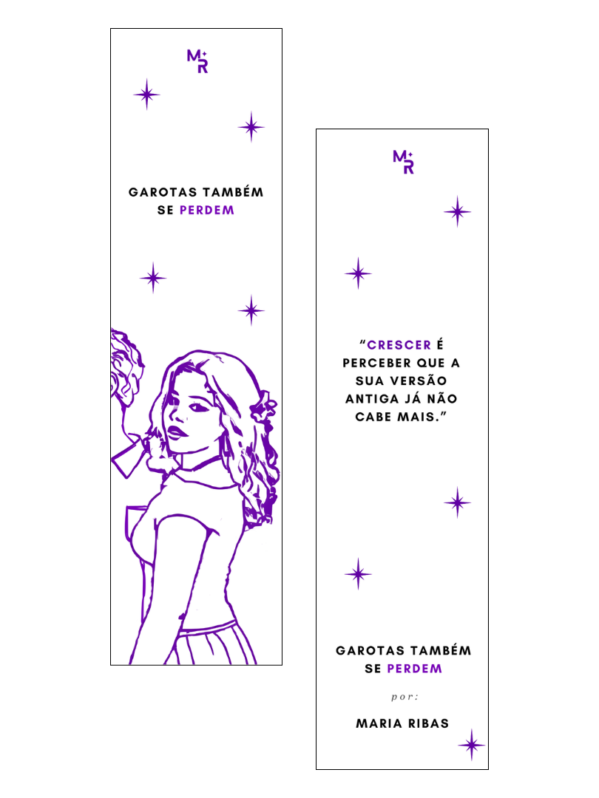

O RB Literário nasceu para transformar sentimentos em literatura e levar uma história independente para cada vez mais leitores.
“Garotas Também Se Perdem” é um livro físico que foi escrito aos meus 15 anos, logo após a pandemia, em um período onde sentimentos pareciam grandes demais para continuarem guardados. O livro fala sobre amadurecimento, intensidade, insegurança, amor e sobre perceber que crescer também significa se perder algumas vezes. Cada página nasceu entre madrugadas, pensamentos silenciosos e emoções que precisavam existir em algum lugar. Classificação indicativa: 14+
As músicas que acompanharam cada capítulo, cada sentimento e cada página.
O RB Literário nasceu de forma independente e hoje carrega o sonho de alcançar leitores em diferentes partes do Brasil.
Todo apoio recebido ajuda o projeto a crescer, investir em divulgação, eventos, novas edições e aproximar “Garotas Também Se Perdem” do objetivo de alcançar cada vez mais leitores.
Você também pode apoiar com qualquer outro valor.
Você pode comprar “Garotas Também Se Perdem” diretamente com o comercial ou pelas plataformas oficiais.

A pré-venda acontece DIRETAMENTE COM O COMERCIAL até o dia 15/05 pelo valor promocional de R$45,00.
Após essa data, o livro passará para o valor oficial de lançamento.
Todas as compras da pré-venda acompanham o marca página oficial do livro.
Adquirir AgoraLançamento oficial do livro
Horário: A partir das 16h.
Evento: Aberto ao público.
Local: Parque Max Feffer — Suzano/SP
Caso você não more próximo ou não esteja na zona leste de São Paulo, você pode chegar facilmente ao Parque Max Feffer utilizando o transporte público. A partir da região central, esse é um dos caminhos mais simples: 1. Vá até a estação Palmeiras–Barra Funda 2. Pegue a Linha 11–Coral (sentido Estudantes) 3. Desça na estação Calmon Viana 4. Caminhe até o Parque Max Feffer (aproximadamente 15 a 20 minutos)
Meu nome é Maria Luiza Ribas. O “RB” de RB Literário vem de Ribas, meu sobrenome. O projeto começou como um bookstagram, compartilhando leituras, sentimentos e referências que faziam parte da minha vida. Com o tempo, ele se transformou em um espaço onde escrita, emoções e histórias ganharam vida, até nascer “Garotas Também Se Perdem”. Hoje, o RB Literário se tornou muito mais do que um perfil: virou uma extensão de tudo aquilo que eu escrevo, sinto e sonho.